Urayasu, Chiba: things to do, food and stays
Urayasu · Chiba
Urayasu
Highlighted on the Chiba map.
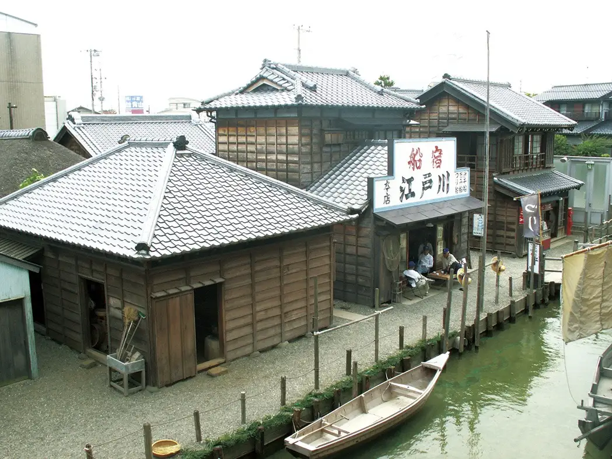
Stay
ハイアット リージェンシー 東京ベイ
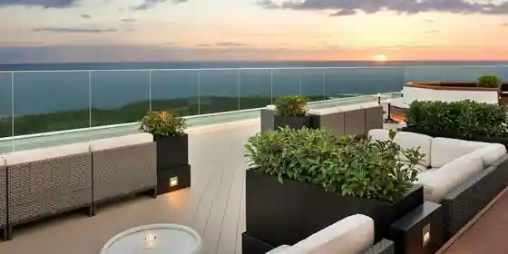
Haiatto Rijienshi Tokyo Bei
グランドニッコー東京ベイ 舞浜
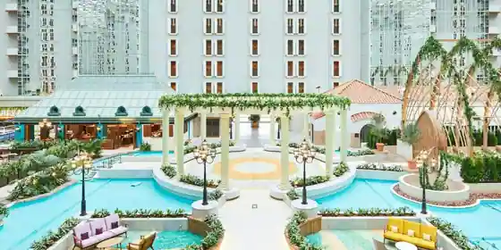
Grand Nikko Tokyo Bei Maihama
東京ベイ舞浜ホテル ファーストリゾート
Tokyo Bei Maihama Hotel Fasuto Resort
舞浜ビューホテル by HULIC
Maihama Byu Hotel by HULIC
ホテルオークラ東京ベイ
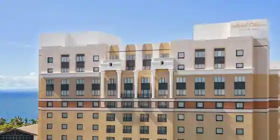
Hotel Okura Tokyo Bei
Hotel in Maihama, Urayasu; 3-minute walk from Izuniresortrainno Station.
ホテルドリームゲート舞浜（本館/アネックス）
Hotel Dorimugeto Maihama (Honkan / Anekkusu)
シェラトン・グランデ・トーキョーベイ・ホテル
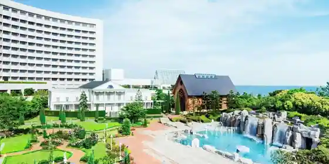
Shieraton Gurande Tokyobei Hotel
ザ ロイヤルパークホテル 舞浜リゾート 東京ベイ
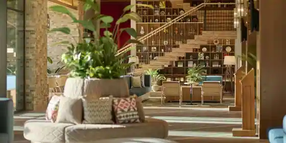
Za Roiyaru Park Hotel Maihama Resort Tokyo Bei
Resort hotel in Chidori, Urayasu; 5-minute drive from Jrmaihama Station.
ホテル エミオン 東京ベイ
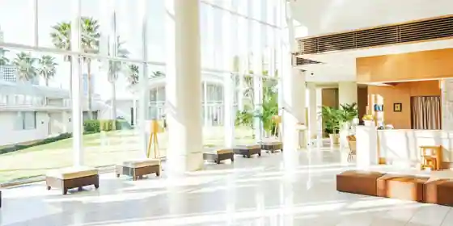
Hotel Emion Tokyo Bei
ＳＰＡ＆ＨＯＴＥＬ舞浜ユーラシア
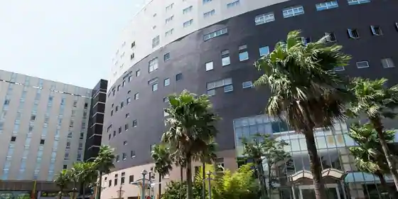
SPA&HOTEL Maihama Yurashia
Inn in Chidori, Urayasu with open-air baths.
ヒルトン東京ベイ
Hiruton Tokyo Bei
Inn in Maihama, Urayasu with family-friendly stays.
ディズニーアンバサダー®ホテル
Dizunianbasada (R) Hotel
Dining
クラブ33
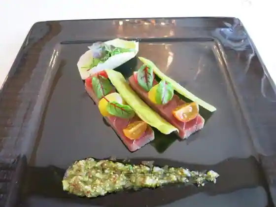
Kurabu 33
オチェーアノ
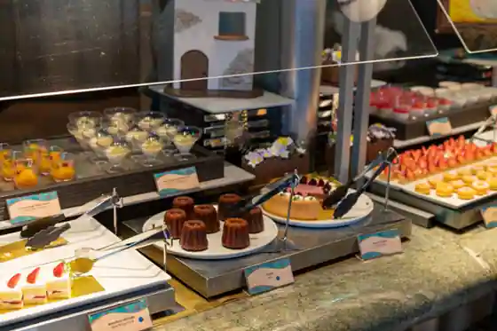
Ocheano
麺屋真星
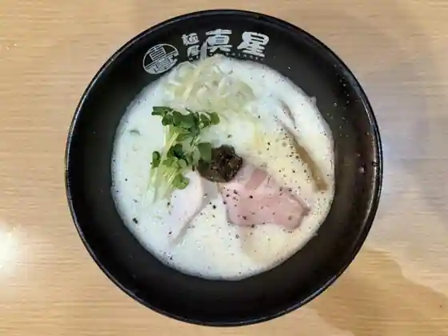
Men Ya Makoto Hoshi
中国料理 「王朝」 ヒルトン東京ベイ
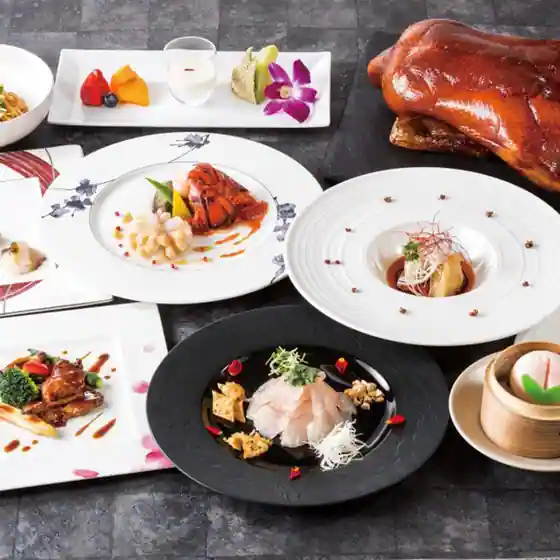
Chugokuryori (Ocho) Hiruton Tokyo Bei
シルクロードガーデン
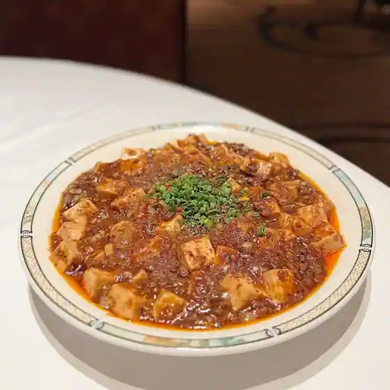
Shirukurodo Garden
ベッラヴィスタ ラウンジ
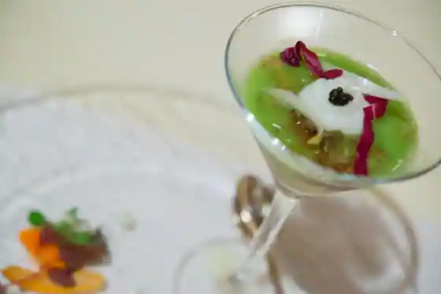
Berravisuta Raunji
京懐石 螢
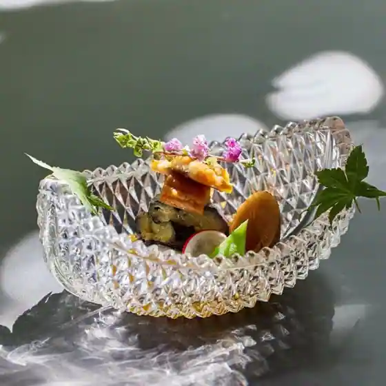
Kyo Kaiseki Hotaru
グレートアメリカン・ワッフルカンパニー
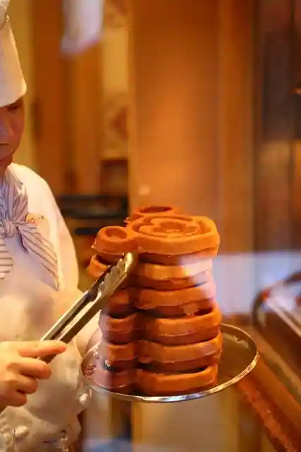
Guretoamerikan Waffurukanpani
イーストサイド・カフェ
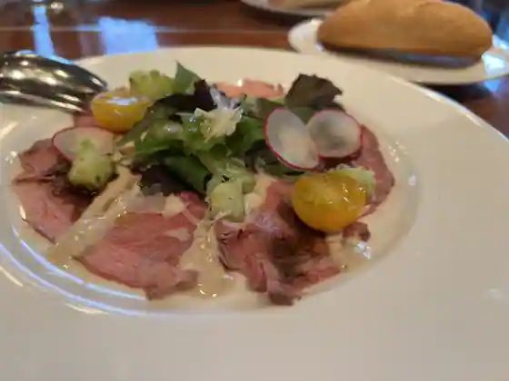
Isutosaido Cafe
のぶし
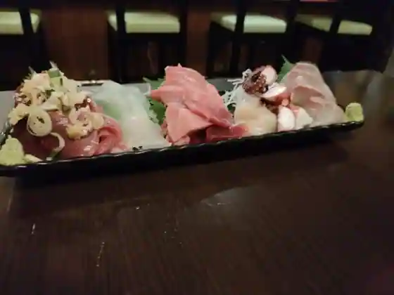
Nobushi
ニューヨーク・デリ
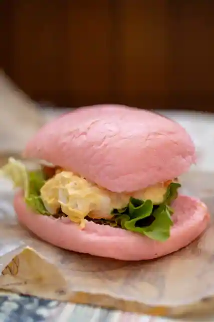
Nyuyoku Deri
ちんねん
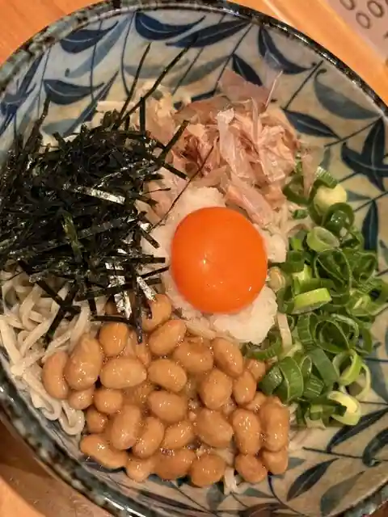
Chinnen
ラ・リベリュール
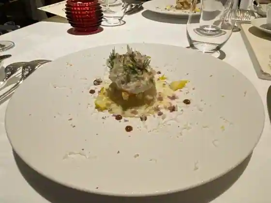
Ra Riberyuru
ピッツェリア イチロウテイ
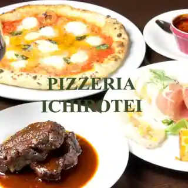
Pizzeria Ichiroutei
鉄板焼 燔
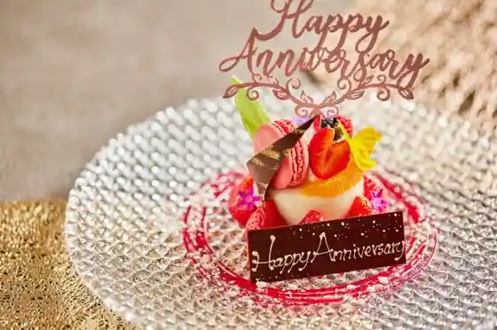
Teppanyaki Han
焼鳥 青葉
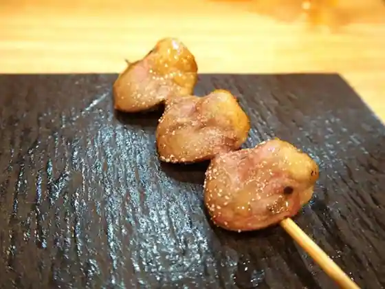
Yakitori Aoba
和のうだがわ
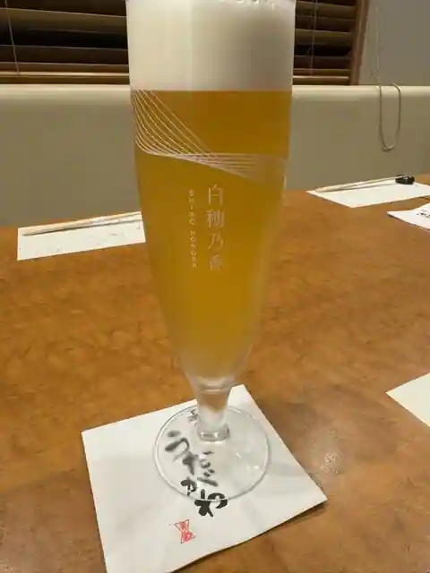
Nagono Udagawa
ロティズ・ハウス イクスピアリ
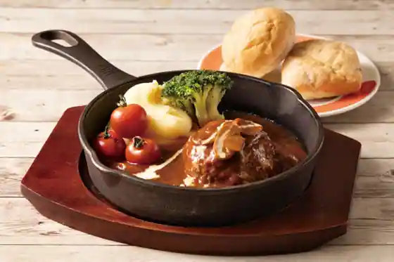
Roteizu House Ikusupiari
カフェ ポルトフィーノ
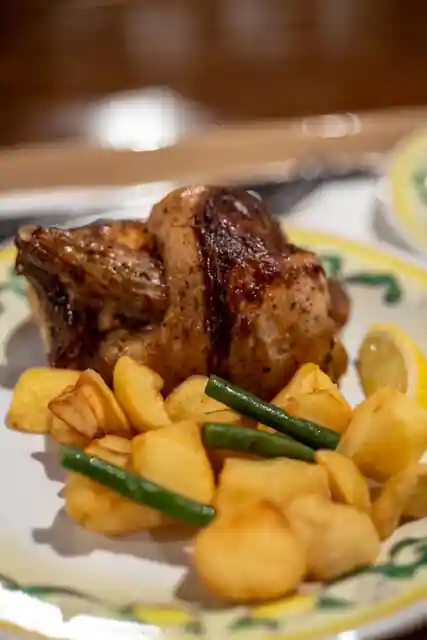
Cafe Porutofino
ラ・タベルヌ・ド・ガストン
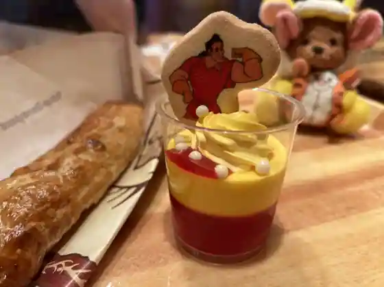
Ra Taberunu Do Gusto N
キャンプ・ウッドチャック・キッチン
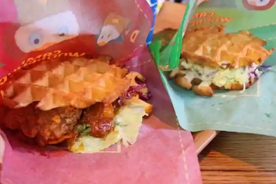
Kyanpu Uddochakku Kitchen
テディ・ルーズヴェルト・ラウンジ
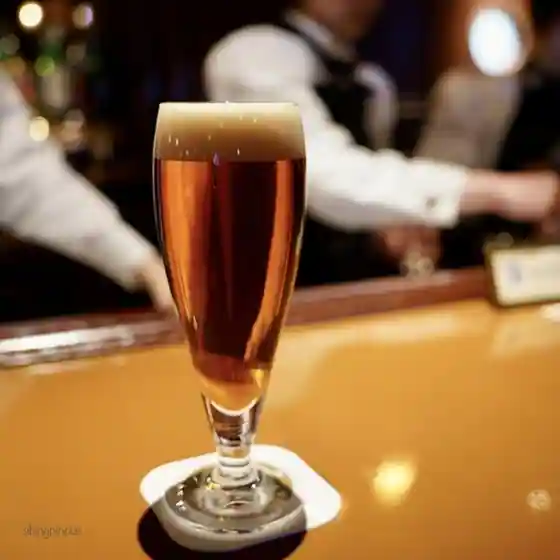
Tedi Ruzuveruto Raunji
慶鳥
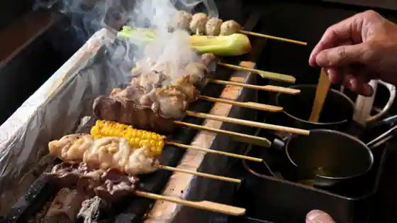
Yoshi Tori
馳走 天乃
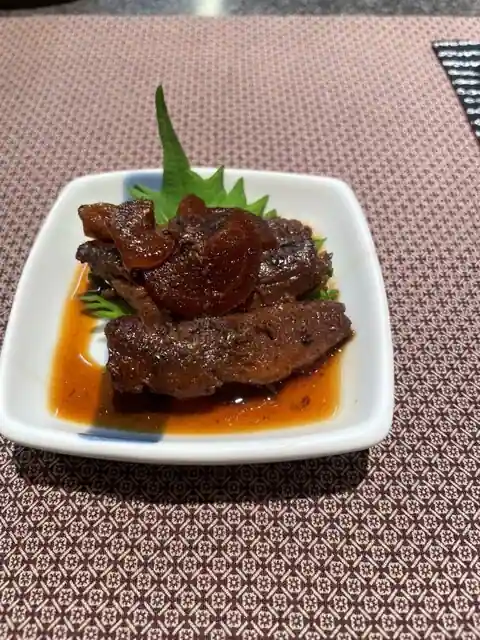
Chiso No
Sights
Urayasu Kyodo Museum
Samban Se Kankyo Kansatsu Kan
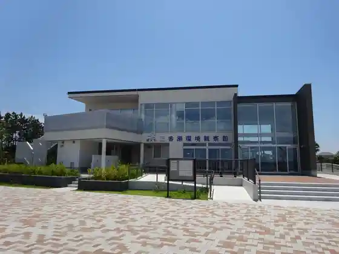
Kissa Sakura
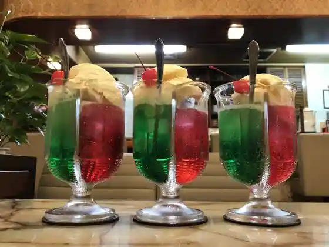
Chuo Park
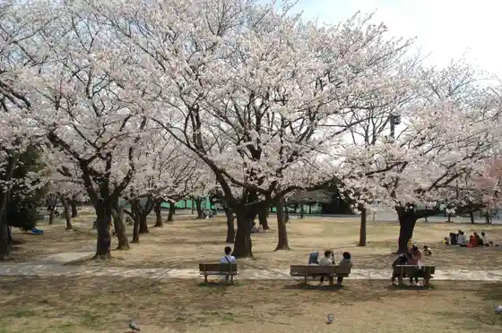
Kyu Udagawa Ie House
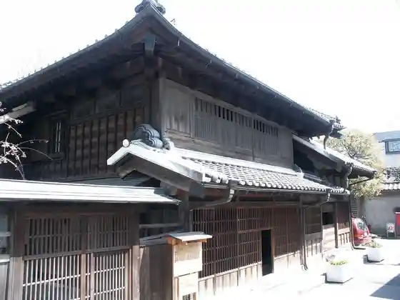
Kyu Otsuka Ie House
Kyu Iin